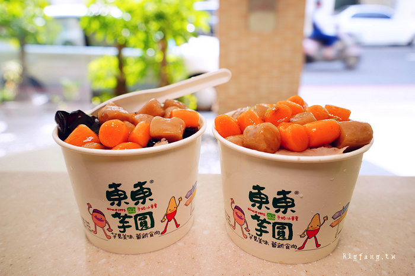
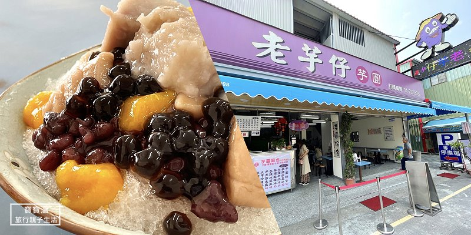
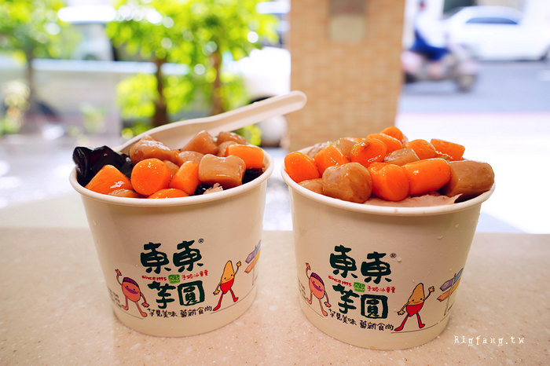
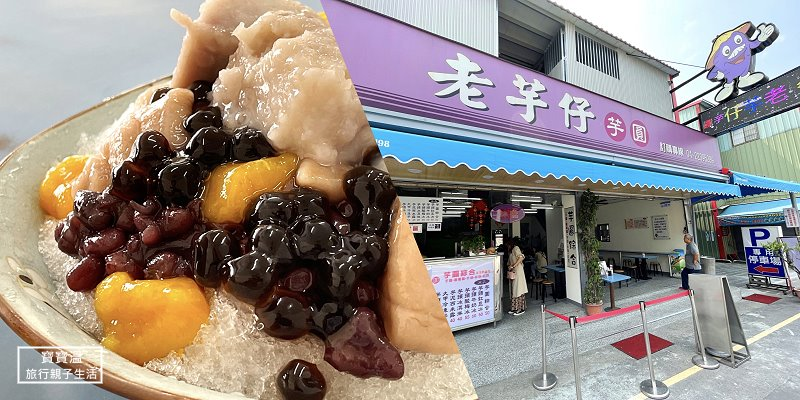
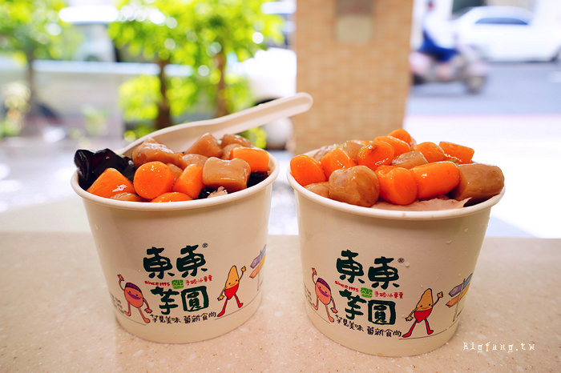
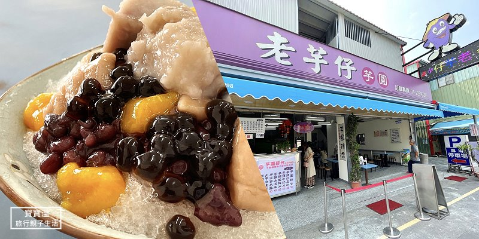

25-9A917050賴昱翔的自我介紹
我是賴昱翔現就讀國立勤益科技大學，在地土生土長的台中人從小一直居住在大坑，大坑有很多登山步道與美食，適合大家來放鬆身心。
還有我是一位熱衷於遊戲、電影和美食的人。我喜歡探索不同的遊戲，觀賞各種類型的電影與影集，並品嘗各種美味的食物。這些東西讓我感到快樂。
 



我是賴昱翔現就讀國立勤益科技大學，在地土生土長的台中人從小一直居住在大坑，大坑有很多登山步道與美食，適合大家來放鬆身心。
還有我是一位熱衷於遊戲、電影和美食的人。我喜歡探索不同的遊戲，觀賞各種類型的電影與影集，並品嘗各種美味的食物。這些東西讓我感到快樂。

